This report captures the Day 5 dashboard analysis using cleaned mutual fund data. It includes industry KPIs, fund performance analytics, investor transaction insights, and SIP/market trend visualizations.
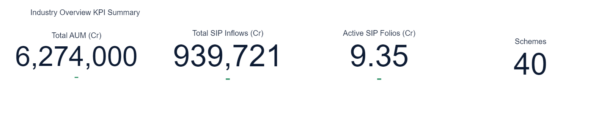
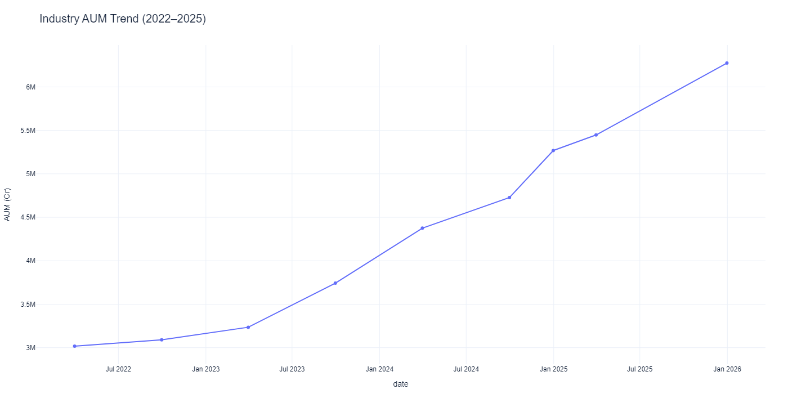
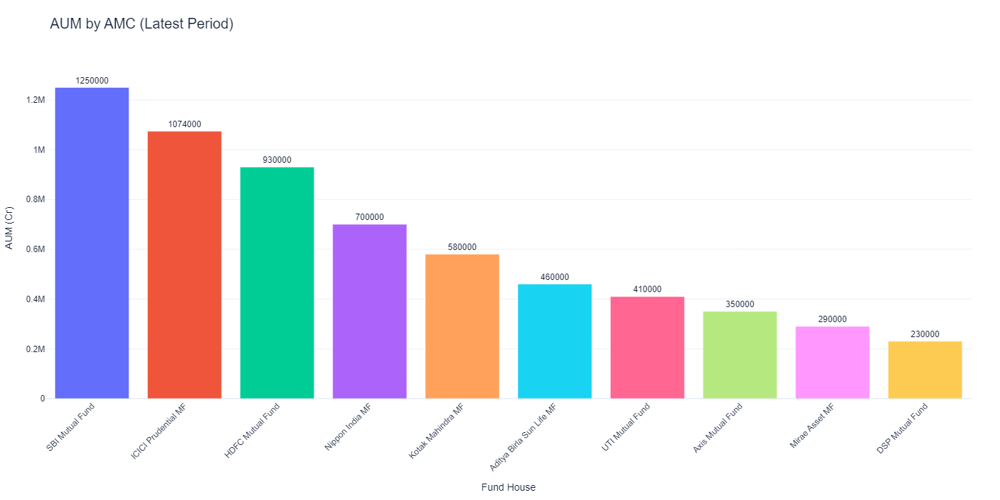
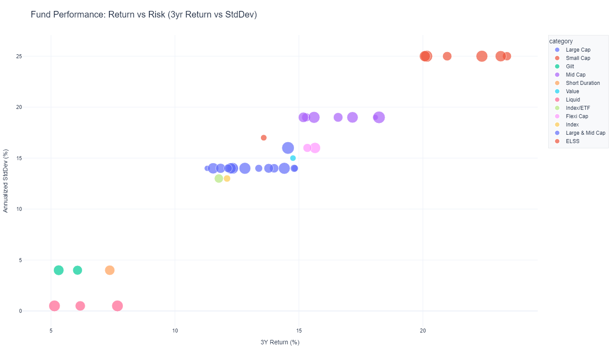
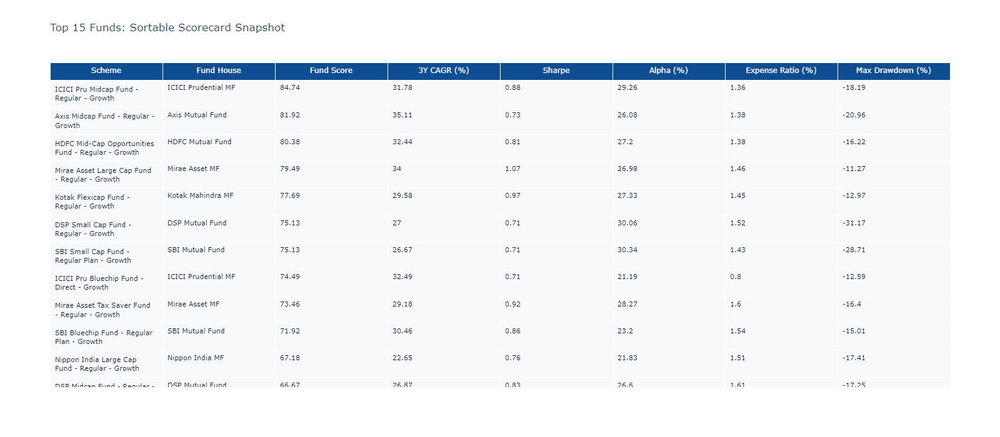
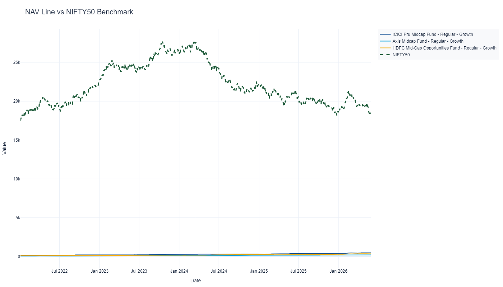
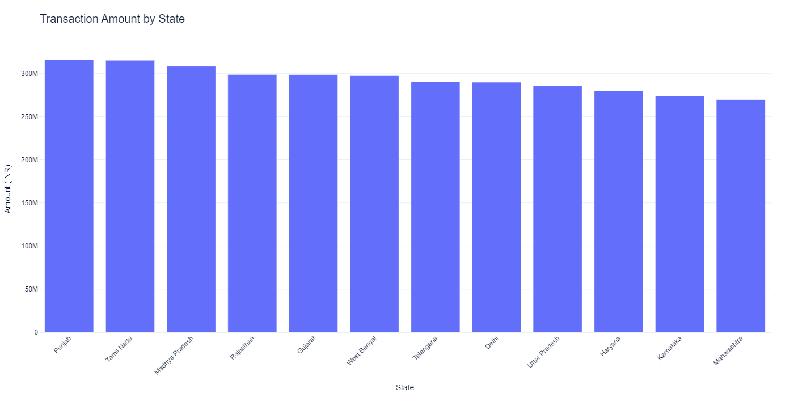
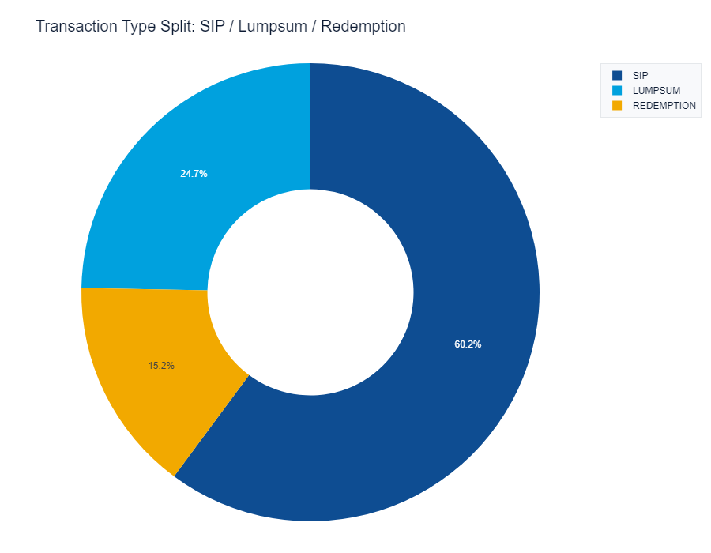
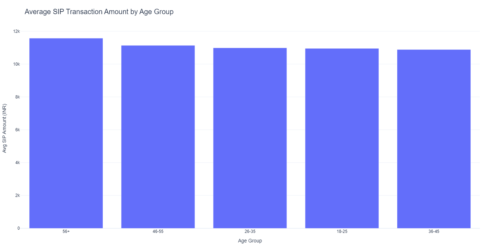
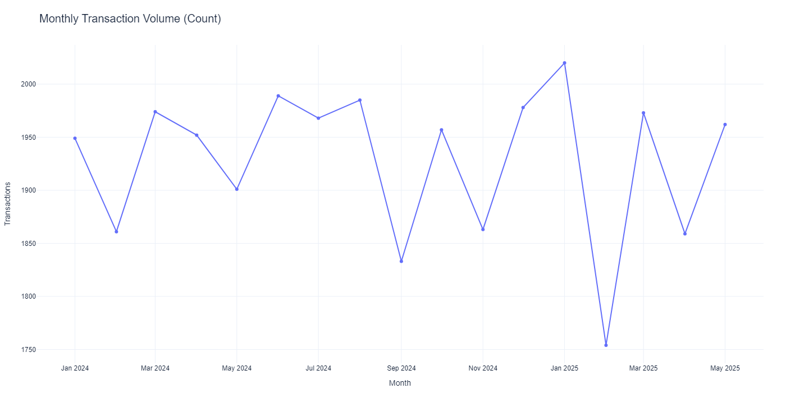
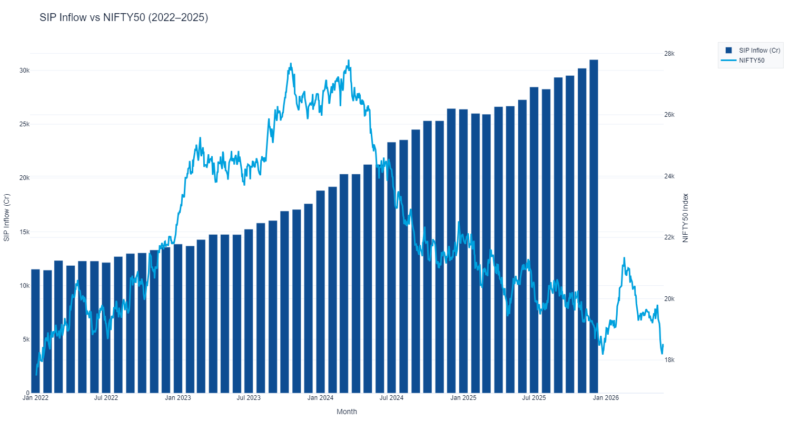
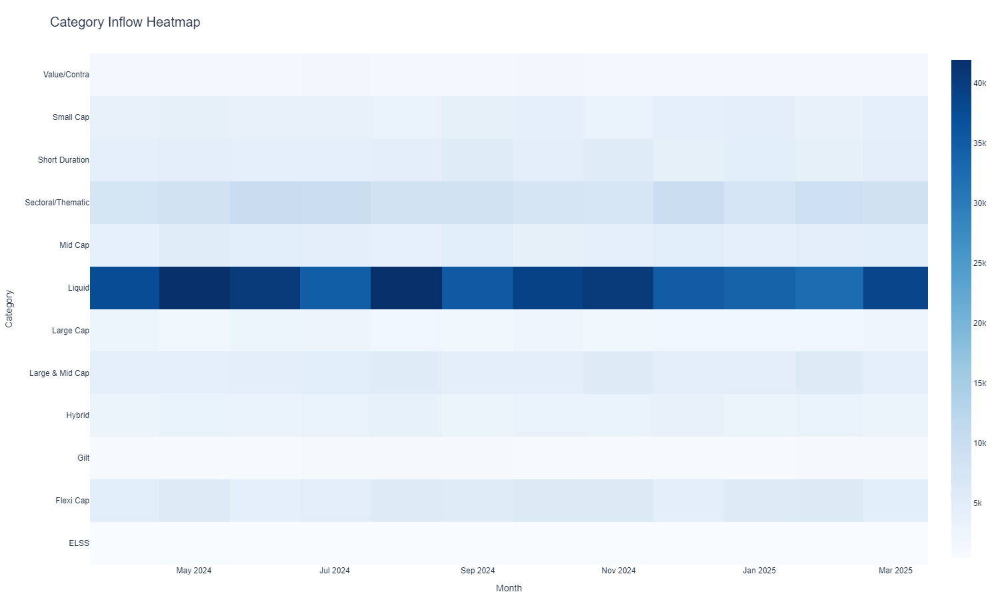
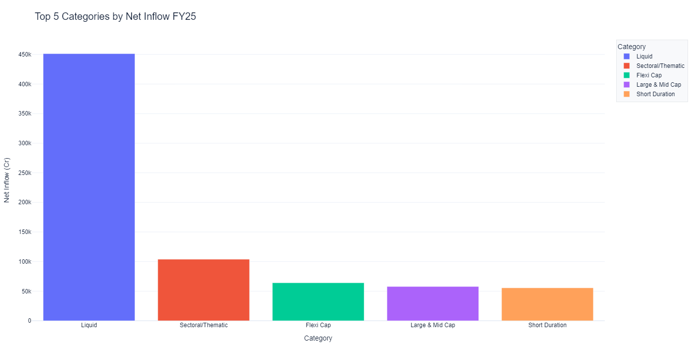